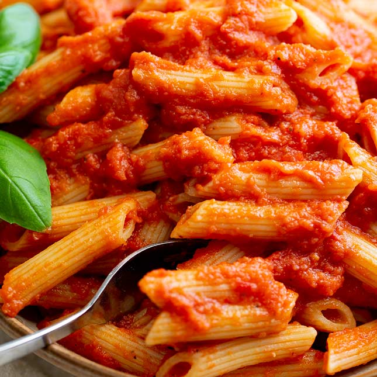

Pasta Recipe

Description
This recipe is a personal recipe adapted from Serous Eats's "Quick and Easy Italian-American Red Sauce in 40 Minutes or Less"
Ingredients
- 2 tablespoons (30ml) extra-virgin olive oil
- 4 cloves garlic, crushed
- Generous pinch red pepper flakes
- 1 teaspoon (2g) dried oregano
- 3 tablespoons (50g) tomato paste
- 2 (28-ounce) cans whole peeled tomatoes
- 1 large sprig basil
- Kosher salt
- 2 tablespoons (1 ounce, or 28g) unsalted butter (optional)
Directions
- In a large pot, combine oil and garlic, and heat over moderately low heat until garlic begins to very gently sizzle. Add red pepper flakes and cook, stirring, until garlic just begins to turn a light golden color, about 3 minutes. Add oregano and continue to cook, stirring, for 1 minute.
- Fry any extra ingredients you wish to add. (Such as meat, red peppers, eggplant, or mushrooms. Cook until no pink remains/tender/tender crisp.)
- Add tomato paste and cook, stirring, until paste has softened and blended with oil, about 3 minutes.
- Stir in canned tomatoes and their juices, increase heat to medium-high, bring to a gentle simmer, then lower heat to maintain. Using an immersion blender, blend tomatoes until sauce is smooth. (Alternatively, use potato masher to crush tomatoes or crush tomatoes by hand before adding to pot. Though this may result in chunks of garlic in the final sauce.)
- Add basil and simmer, stirring occasionally, until sauce is reduced slightly and tastes rich, about 30 minutes. Season with salt.
- Boil water, adding salt right before the water is about to boil, and then add pasta and cook according to packaging; though remove 1-3 minutes before suggested cooking time. Reserve ½-1 cup of stachy pasta water before draining pasta into a strainer.
- Discard basil. Add reserved pasta water (this helps the sauce adhere to the pasta better) and stir in butter, if using, until melted. Then add the cooked pasta to the sauce, raising heat to medium, and cook for an additional 1-3 minutes until it is the desired texture (cooking in sauce allows for more of the flavour of the sauce to permeate into the pasta. Giving that "next day leftover" flavours to a fresh meal). Serve warm.